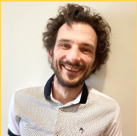

A gathering to discuss the emerging dilemmas around the principles and practice of computational social science research in a changing technological landscape.
New participation format “Behind the Scenes” announced
Motivation
Many of the contemporary issues affecting computational social scientists are related to both, processes of and the ethical principles underlying computational social science research, which are often, and repeatedly, disrupted by platform politics, new technologies, their implications, and their unknowns. For instance, the increasingly turbulent techno-political online environment has seen a few key developments that have affected the scope and characteristics of computational social science research centered on social media. The global pandemic, a looming climate change crisis, violent populist events such as Jan 6, 2021 (first ever attack on the U.S. Capitol), with a repeat on Jan 8, 2023, in Brazil (a copycat attack on Brazil’s Praça dos Três Poderes), the almost two-year long war, the attack on Israel by Hamas and the subsequent armed conflict in Gaza; and ubiquitous conspiracy theories surrounding everything have spurred more discussions around access, inclusivity, privilege, and propaganda, than ever before.
Furthermore, these real-world events have been accompanied (and often closely entangled) with technological changes in the online world: the rise of TikTok and the fall of Facebook, Twitter’s takeover by Elon Musk, and new AI technologies (Open AI’s ChatGPT, DALL-E, Stable Diffusion, GitHub CoPilot, etc.). Especially LLMs (Large Language Models) and their applications are being widely discussed in academia and media as potential “disruptors” of scientific integrity, especially the jobs of knowledge workers.
As computational social scientists, it is important not simply to study these events, but also to talk about them in light of our roles as the creators and stewards of knowledge. How, then, should the ICWSM community members react to these disruptions? Which disruptions should they embrace and which ones should they resist? Whom do they ally with, and for what purpose? These are not philosophical questions any longer. They are real and they need to be addressed.
Participate
In order to participate in the workshop, we invite three types of submissions:
Short, 200-word statements of interest that express a desire to participate in the workshop discussion, by positioning oneself with respect to the issues discussed below.
2-5 page (in AAAI format) extended abstracts that detail one’s position on one of the issues discussed below. Accepted abstracts will appear in the workshop proceedings.
- “Behind the Scenes” insights on a recent paper (2-pages in AAAI format)
All types of submissions can be made at the submission portal on Easychair. Given limited space, preference will be given to those who submitted extended abstracts.
The position papers should, at a high level, address concerns with processes of and the principles underlying computational social science research, and how they are often, and repeatedly, disrupted by platform politics, new technologies, their implications, and their unknowables. By problems of process, we refer to, for example, the fact that the increasing availability of proprietary AI tools has created challenges for the research process. With respect to issues of principle, we refer to the fact that recent events related to questionable technology takeovers and layoffs, exposes on techno-political alliances, and questionable labor practices at large technology companies create new dilemmas for researchers collecting, annotating, and analyzing online data.
Position papers should be grounded in evidence, prior published work, and ideally, also personal experiences. Examples of the position papers we seek can be found here, here, here, or they can be responses to news stories like this one. Ideally, position papers should respond to the provided prompts below (i.e., concerns about processess and principles), although we will also consider papers that do not explicitly respond to a prompt, but discuss an interesting and relevant problem pertinent to this discussion.
The “Behind the Scenes” segment aims to shed light on the hurdles researchers face but seldom discuss in their final papers. In particular, we are looking fo submissions that touch upon issues regarding the themes outlined in detail in the next section.
We encourage submissions from individuals and teams willing to share their experiences, including but not limited to, overcoming obstacles in data collection, navigating API limitations or costs, addressing reproducibility issues, and tackling the complexities of working with LLMs. Whether it was a struggle with dataset accessibility, an unexpected hiccup in model performance, or a creative workaround to a common problem, your insights can provide immense value to the community. This is an opportunity to discuss the often-unseen aspects of research that can significantly impact the outcome and interpretation of your work.
By sharing these experiences, we hope to foster a more transparent, collaborative, and supportive research environment, enabling us to collectively tackle the complexities of modern computational social science research.
Themes
The increasing availability of proprietary AI tools has created challenges for the research process as well as the researchers themselves – to adapt or be left behind.
Reproducibility:: First, we can consider their impact on the research process. While preregistrations and transparency checklists offer promising directions for clarifying contentious issues in the research process, the use of technology to collect, process, and even create data (such as is possible through the use of LLMs) may imply that they can do little to ameliorate the reproducibility crisis plaguing social science today. Is the peer review process robust to these onslaughts? What can be done to establish the credibility and validity of published research? One of the workshop organizers, David Schoch, recently published a piece on these issues.
Embracing or Resisting new tools: Second, we can consider their impact on researchers. On the one hand, they may spur opportunities to study known problems differently; on the other, they may trigger the study of the new problems they herald (or bring to light). New technologies and tools may also spell unfavorable consequences for those who lack the computational resources to use them, who may even consider pivoting their research directions and methods. Who can use these tools, and what would this imply for those who can not or may not? Related to the use of AI tools for doing research is the issue of the use of AI tools for evaluating research in processes such as peer-reviewing at conferences or grant agencies. While some grant agencies (for example, the NSF) have published their guidelines, others are learning the lessons the hard way (see allegations of use of AI for merit review for Australia’s Research Council).
Recent events related to questionable technology takeovers and layoffs, exposes on techno-political alliances, and questionable labor practices at large technology companies create new dilemmas for researchers collecting, annotating, and analyzing online data. These problems now extend to the dilemma of using methods and models that are the offshoots of anti-consumer corporate practices. For instance, large language models, or LLMs, are owned by private companies, but they were built by ingesting the entirety of human-produced text available on the internet without attribution. What does it mean to make privately-owned LLMs central to one’s research? Are LLMs (and other generative models) the same as code libraries? Or something else entirely? Do they create dilemmas for ``conscientious objectors’’, who might refuse to use such tools on ethical grounds? What would this mean for their research prospects at journals and other publication venues?
One can add to above-mentioned also the issue of truthfulness. LLMs are notorious for ``hallucinating’’ or making stuff up, but not all researchers or the public at large are aware of the extent of this feature. Here is an example of researchers relying on Google’s Bard to create case studies, which turned out to be false. What obligations do researchers have to expose such harms and educate the public to be cautious?
ICWSM researchers have for many years relied on APIs and large data collections from Twitter or Reddit. As both these platforms have severely restricted access to their data, researchers have started to look for other ways to study sociotechnical phenomena on these platforms or the web at large such as data donation from users, Internet observatories, simulation of human-like behaviors, etc. Similarly, given the high costs related to training or fine-tuning LLMs and similar AI models, there is a growing ecosystem for sharing models or data labeled via such models. These open up opportunities for allyship between organizations with a varying degree of resources to access data and models. How to raise awareness about such opportunities? How to create structures for formalizing such alliances?
Important Dates
- Workshop Papers Submissions: March 31st
- Workshop Paper Acceptance Notification: April 14th
- Workshop Final Camera-Ready Paper Due: May 5th
- ICWSM-2024 Workshops Day: June 3rd
Program
This is a full-day workshop. Our goal is to provide a venue in which participants will engage with the listed issues through various formats: keynote speakers and panels, collaborative debate-style breakouts, and lightning sessions.
Depending on whether participants (those who are invited or who will apply to participate) are able to present in person or remotely, we will create a program to take into account how to best serve both audiences.
The tentative schedule can be found below. (Buffalo local time, EDT/GMT-4)
| Time | Description | Speaker |
|---|---|---|
| 8:30 - 09:00am | Coffee | |
| 09:00 - 09:15am | Introduction | |
| 09:15 - 10:15am | Panel: More data is not the answer/Avoiding integrity crises in research | Orestis Papakyriakopoulos, Helena Webb, moderated by Ella Haig |
| 10:15 - 10:50am | Replicability of CSS | Chung-hong Chan |
| 10:50 - 11:10am | Coffee Break | |
| 11:10 - 12:45am | Paper Session |
|
| 12:45 - 2:00pm | Joint Lunch Break with Data Challenge Workshop |
The afternoon are joint (offline) sessions with the Data Challenge Workshop. More details will follow.
| Time | Description | Speaker |
|---|---|---|
| 02:00 - 03:30pm | Panel | |
| 03:30 - 04:00pm | Coffee Break | |
| 04:00 - 05:30pm | Behind the scene lighting talks |
Speakers

Orestis Papakyriakopoulos is a professor for societal computing. His research provides ideas, frameworks, and practical solutions towards just, inclusive and participatory socio-algorithmic ecosystems. He builds tools and performs foundational research on platforms and artificial intelligence. Orestis analyzes new and old media by the application of data-intensive algorithms, as well as the political and social impact of the use of data-intensive algorithms themselves.
TBD

Helena Webb is an Assistant Professor for AI at Nottingham. She is an experienced socio-technical researcher with expertise across responsible research and innovation (RRI), human-computer interaction (HCI), science and technology studies, and the sociology of technology. She is interested in the ways in which users interact with technologies in different kinds of setting and how social action both shapes and is shaped by innovation.
TBD

Dr. Chung-hong Chan (PhD University of Hong Kong, 2018) is Senior Researcher in the Department of Computational Social Science, GESIS – Leibniz Institute for the Social Sciences, Cologne, Germany, and External Fellow at the Mannheim Center for European Social Research, University of Mannheim (Germany). An epidemiologist by training, he is interested in developing new quantitative methods for communication research.
What makes computational communication science (ir)reproducible? (paper)
Organizers
Eni Mustafaraj
Wellesley College

David Schoch
GESIS
Ella Haig
University of Portsmouth
Jason Nurse
University of Kent